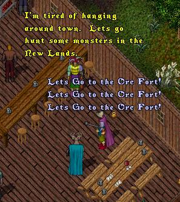
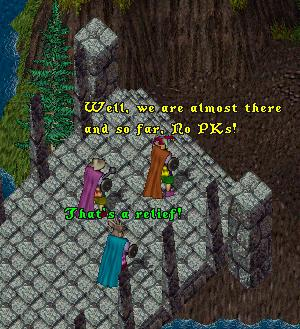
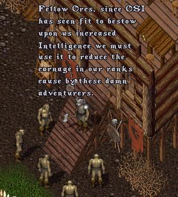
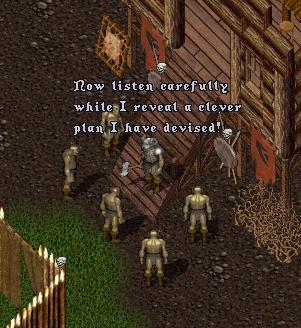
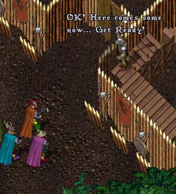
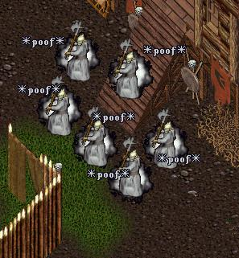
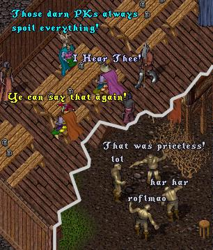

As this episode opens, we find ImaNewbie
and a couple of the other L.O.S.E.R.S. guild
members, feeling kind of bored and deciding
on an adventure in the New Lands.
 |
Soon the three adventurers find themselves
in the New Lands, north of Delucia, heading
for the Orc Fort.
 |
Meanwhile, at the Orc Fort, the Orcs are
having a meeting to discuss how best to use
their newly gained "Improved Intelligence"!
 |
 |
Hrmm, very interesting, wonder what they
have planned? But wait! An Orc sentry
posted by the gates spies our intrepid
threesome approaching the Fort.
 |
|
 |
|


Later that afternoon, back at the tavern
(and the Orc Fort)...
 |